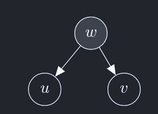
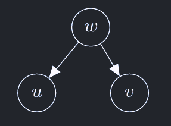
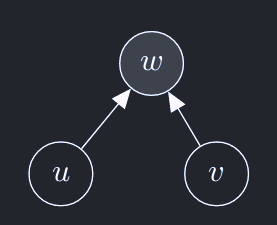
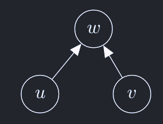
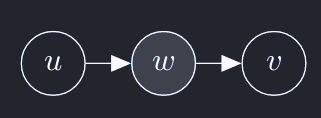
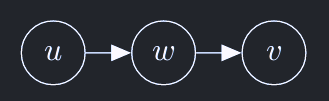

Causal Inference Primer
The goal of causal inference is to determine the existence/non-existance of causal relation between two sets of variables (causes and outcomes).
Before performing causal inference one has to determine the universe in which causal inference has to be performed.
This universe encapsulates the potential causes and outcomes we are interested in.
This universe can be described by a Probabilistic graphical model or structural causal model.
Probabilistic Graphical Models (PGMs) Represented by a directed graph \(G = (V, E, P)\). where each node \(v \in V\) is a random variable. Edge \(e = (v_s, v_e)\) represents the dependence of \(v_e\) on \(v_s\). \(P\) represents the set of all conditional probabilities
\[ \forall v\in V, p_v(v|\text{pa}(v)) \ \text{where, } \text{pa}(v) = \{v' \in V | (v',v)\in E\}\]
In PGMs each note is treated as outputting a probability distribution of the random variables it represents, the nodes in SCMs on the other hand output a sample from the distribution of the random variable. SCMs can be represented by a triplet \((V, F, U)\) where, \(V\) is the set of random variables, \(F\) is a set of deterministic functions, \(U\) is a set of exogenous(external) noise variables. Then sampling from a node \(v\) can be written as. \[v \leftarrow f_v(\text{pa}(v), \epsilon_v), \, v\in V,\, f_v\in F,\, \epsilon_v\in U\]
Correlation, Independence and Causation
Dependence: Two random variables \(u,v\) are independent iff
\[p(u, v) = p(u)p(v)\]
or else \(u, v\) are dependent.
Correlation: Two random variables \(u, v\) are correlated iff
\[\text{cov}(u, v) = \mathbb{E}[(u-\mu_u)(v-\mu_v)] > 0\]
if \(\text{cov}(u,v) == 0\) then \(u, v\) are not correlated.
Causation: Random variable \(u\) is said to be causing \(v\) if there is an edge from \(u\) to \(v\) in the data-generating process(represented as a PGM or SCM). We will later define measures to identify the strength of this causal effect.
Correlation, dependence, and causation are not equivalent. In short,
- Two independent variables are uncorrelated, but two uncorrelated variables may not be independent.
- Correlation does not imply causation.
- The lack of correlation does not imply the lack of causation.
Confounders, colliders and mediators
- Statistical dependence between two random variables can exist even when they are not causally related.
- This section analyzes causal and statistical dependence between two variables \(u, v\) in all possible atomic situations they can then be composed to determine causal or statistical dependence in more complex graphs.
D-seperationis the process of determining dependence between two variables in a larger PGM given a set of observed nodes.
observed Confounder

Since \(w\) is observed \(u, v\) are conditionally independent. Also as seen from the SCM they also are not causally related.
\(u \leftarrow w \rightarrow v\) is said to be closed(due to independence).
\[p(u,v |w) = p(u|w) p(v|w)\]
un-observed Confounder

\[ p(u,v) = \int_w p(u|w)p(v|w)p(w)dw \neq q(u)q(v)\]
Here \(u, v\) are not independent, they are also not conditionally independent. They are dependent and causally not related.
\(u \leftarrow w \rightarrow v\) is said to be open (due to dependence).
Because of this effect \(w\) is called a confounder.
Observed collider

\[ \begin{array}{rlr} p(u,v,w) &= p(w) p(u,v|w) \\ p(u, v|w) &= \frac{p(u,v,w)}{p(w)} \\ p(u,v|w) &= \frac{p(u)p(v,w|u)}{\int_u \int_v p(u)p(v)p(w|u,v)} \\ p(u,v|w) &= \frac{p(u)p(v)p(w|u,v)}{\int_u \int_v p(u)p(v)p(w|u,v)} &\neq q(u)q(v) \end{array} \]
observed collider results in explaining-away effect.
\(u, v\) are not independent, there is no causal relation between them as seen from SCM above.
\(u \rightarrow w \leftarrow v\) is open.
Un-Observed collider

\[ \begin{array}{rlr} p(u, v) &= \int_w p(w| u,v)p(u)p(v)dw \\ &= p(u)p(v) \int_w p(w| u, v) dw \\ &= p(u)p(v) K \\ &= q(u)q(v) \end{array} \]
\(u, v\) are independent.
No causal dependence.
\(u \rightarrow w \leftarrow v\) is closed.
Observed Mediator

\[p(u,v|w) = p(u) p(w|u) p(v|w) = q(v|w) q(u|w) \]
u and v are independent conditioned on w.
\(u \rightarrow w \rightarrow v\) is closed as w is fixed and changing u does not change v anymore as w is fixed.
Therefore, independent and no causal dependence.
Un-Observed Mediator

\[ p(u,v) = \int p(u)p(w|u)p(v|w) dw = p(u) \int p(w|u)p(v|w) dw = p(u) q(v|u) \]
Therefore \(u,v\) are not independent.
Change in u will change the distribution/value of w which will propagate to v. So, u causally affects v.